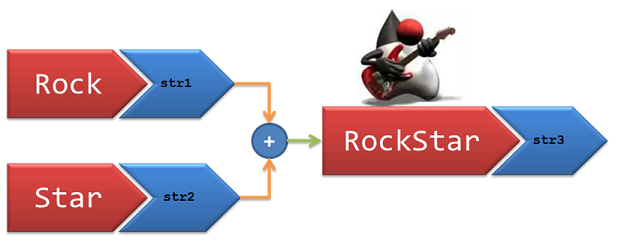

James Madison University, Spring 2018 Semester
Lab04: Concatenation and types
Background
Java is a strongly typed language. In some cases, automatic conversion may occur to make both operands the same type before the operation is carried out. In other cases, automatic conversion cannot be done. This lab explores some of these features while also exploring the Scanner class.
Collaboration: You are encouraged to work with another student to complete this lab. Each of you should submit your own copy of the programs. It's okay if your files are similar or identical, as long as both of your names are present at the top.
Submission: At the end of class today, or by 11:00 PM if you would like more time, submit both Concat.java and Types.java via Canvas.
Objectives

Check out
Strings on Java Tutorial Hub
Practice string concatenation using the + operator.
Use a Scanner to read values from the keyboard.
Explore Java data types and their compatibility.
Key Terms
- data type
- The kind of data that a variable can hold.
- strongly typed
- Variables may only be declared to be one type.
- concatenation
- Process of combining (or joining) two strings.
- Scanner
- A Java class that simplifies input processing.
Part 1: Two meanings of +
Download:  Concat.java (right-click, Save link as..., navigate to CS149/Lab04)
Concat.java (right-click, Save link as..., navigate to CS149/Lab04)
In Java, the symbol + can be used to add numbers or to concatenate strings. This lab illustrates both uses.
When using a String literal (i.e., a sequence of characters enclosed in double quote marks) in Java, the complete String must fit on one line. The following is NOT legal; it would result in a compile-time error.
System.out.println("It is NOT okay to go to the next line
in a LONG string!!!");
The solution is to break the long String up into two shorter strings that are joined using the concatenation operator (which is the + symbol). So the following would be legal.
System.out.println("It is OKAY to break a long string into "
+ "parts and join them with a '+' symbol.");
Note how the continued line is indented two blocks to indicate it is a continuation line. Also note that the operator is placed at the beginning of the continuation line instead of at the end of the first line, to improve readability.
So when working with strings, the + symbol means to concatenate the Strings (join them). BUT when working with numbers, the + means what it has always meant: to add!
- Open the Concat.java file. Do not compile or run
the program yet.
- Unlike primitive data types (like int and double), Strings are Java classes
just like the Concat program itself is a class. As such, String has methods or
actions that can be done.
- This program uses the length method of the String class. length is a method that returns a value which, in this example, is the number of characters in sample. Or another way to read this is "sample's length".
- "Hand trace" the program. That is, act as if you were a computer and execute each statement in the program like a computer would.
- Write the output your hand tracing produces on paper. Raise your hand and show the instructor your paper before proceeding.
- Compile and run the actual java program. Compare your "expected result" with the "actual result".
- For each line where the "expected result" differed from the "actual result", do you understand why your prediction was wrong? If you cannot figure it out so you know for sure, ASK!
Correct the second output statement so blanks are printed around the 55. Recompile and run.
Before turning in this assignment, summarize what you have learned in the Javadoc comment for main. Be sure to fill in your name and today's date in the class's Javadoc comment.
Part 2: Input in Java
Download:  Types.java (right-click, Save link as..., navigate to CS149/Lab04)
Types.java (right-click, Save link as..., navigate to CS149/Lab04)
- Open the Types.java file.
- Read through the program, noticing the following new features:
- Scanner - The Scanner class provides a mechanism for reading in values from the keyboard (among other things).
- The very first line of the source file is an import statement. This import makes the Scanner class
available to this program.
- Before we can use the Scanner, we must make
an instance of it. We call an instance of a class an object. So we need
to create a Scanner object.
- So, we first declare a Scanner variable named input. Then in the initializations, we instantiate or make a new Scanner object. The value in the parentheses is System.in which refers to standard system input or the keyboard.
- Whenever we expect the user of a program to enter something at the command line, we have to prompt them. The line System.out.print("Enter a number: "); is performing the prompt. When you run this program, the line will display, then the program will stop executing until the user enters a value on the command line. The line num1 = input.nextInt(); is the place where the input Scanner is reading what the user has typed in and assigning it to the variable num1.
- We then "echo" the value of num1 in the following line.
- Compile the program and execute it. Use any integer value for num1. (What happens if you don't type in an integer?)
- Now, duplicate the four lines at the end of the program and alter them to read a value into val1. You will need to use the nextDouble() method instead of nextInt(). There should be a blank line between this new block of code and the previous one.
- Compile and execute the program with your changes.
- Finally, duplicate the last four lines again and alter them to read a
value into text. You will need to use the
nextLine() method instead of nextDouble(). Make sure you are also updating the comments!
NOTE: When reading in numbers via nextInt or nextDouble, Scanner does not read the newline character that you typed (by pressing Enter). If you want to read the next line of text, you may need to call nextLine twice! The first call reads the newline after the number, and the second call reads the next line of text.
Part 3: Data types and compatibility
The last part of the lab will have you practice with different data types. The three shown in this lab are the ones you will most commonly use. Questions in green are thought questions only and do not need to be turned in.- Add a statement to the end of the program to assign the value found in text to the variable val1. What happens when you try to compile it?
- Comment out that line and add a new line that assigns the value of val1 to num1. What happens when you try to compile it?
- Comment out that line and add a new line that assigns the value of
val1 to val2. What happens when you try to compile it? Will it
execute?
- Add a print statement to display the contents of val1 and val2 after the
assignment.
- Add a statement to the end of the program to assign the value found in num1 to val2. What happens when you try to compile it? Will it execute?
- Add a print statement to display the contents of num1 and val2 after the
assignment.
- What can you say about compatibility among Java data types? In other words, when can you assign values of different data types to one another? Summarize your answer in the Javadoc comment for main.